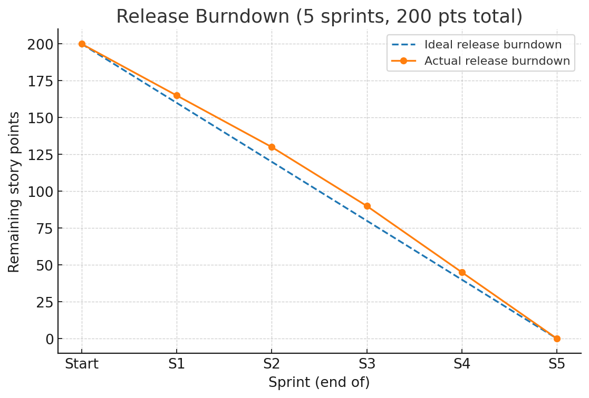

Marketing Campaign with Scrum
This simple, selfmade fictional project demonstrates how Scrum can be applied outside of software development.
The goal was to plan and execute a multi-channel marketing campaign for a new product update.
The campaign was delivered in short iterations, with continuous feedback and measurable results at each stage.
This approach ensured flexibility and transparenct outcome.
Product Vision
Delivering a 3-month marketing campaign that increases awareness and drives conversions for a new major product update.
That happens while continuously optimizing based on stakeholder feedback.
Context & Team Setup
Campaign type: Product update with website, email, blog, and social media assets.
Target audience: Existing customers and new prospects in the consumer software space.
Team composition:
- Product Owner: Responsible for campaign goals and priorities. This is our Director of Marketing or Head of Campaigns.
- Scrum Master: Facilitated ceremonies, removed blockers. In this scenario my role.
- Development Team: Designers, content writers, and a performance marketing specialist.
Tools used: Jira (backlog & sprint board), figma (brainstorming, text & design), MS Teams (team sync), Google Analytics (metrics).
Backlog
- Create campaign concept & branding
- Define target audience & KPIs
- Dedicated landing page with signup form
- Write and schedule email series (3 emails)
- Create social media ads (3 variations)
- Develop blog post series (3 posts)
- Set up analytics dashboards
- Run A/B tests for ads and landing page
- Collect feedback & adjust campaign
Definition of Done
A backlog item is considered done when:
- Content or asset is fully created, reviewed and approved
- Design meets the branding and campaign guidelines
- Deliverable is tested and functional
- Tracking/analytics are implemented and verified
- Deliverable is live, accessible to the customer, and documented in the campaign log
Burndown Chart

Sprint 1
- Create campaign vision & branding
- Define KPIs & target audience
- Draft initial backlog refinement
Sprint 2
- Build landing page (basic version)
- Write first email & blog post
- Prepare first social media creatives
Sprint 3
- Publish landing page
- Send first email
- Launch social ads
- Sprint Review: Measure early results
Sprint 4
- Run A/B tests (ads & lp)
- Publish additional blog posts
- Send second and third emails
- Optimize based on analytics & feedback
Sprint 5
- Final analytics report
- Lessons Learned document
- Sprint Retrospective with team
Results
Landing page conversion rate: +13& vs. previous campaigns
CTR on social ads: 3.2& (above usual 2.5&)
Revenue change: +15& in comparison to a normal sales campaign
Predictable team velocity after Sprint 2 (average: 38 story points)
Lessons learned
- Scrum works well for marketing, especially for iterative content delivery.
- Early stakeholder demos helped secure buy-in and prevented last-minute changes.
- Dependencies on content approval slowed Sprint 2 — solved with more but shorter syncs with Stakeholders for more transparency.
- For future campaigns, adding automation would improve feedback loops.